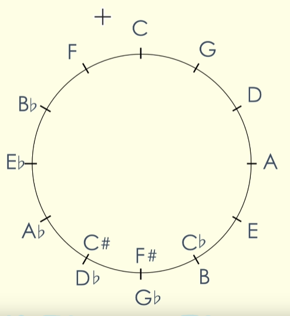

和弦
C大调和弦
(大小小大大小)
和弦
根音 和弦开始的音 (C、D、E、F)
低音 （最开头的音）
类型 （M、m、M7、m7）
大三加小三 大三和弦 Major maj M CEG
小三加大三 小三和弦 Minor min m DFH
小三加小三 减三和弦 Diminished dim ° BDF
大三和弦加大七度音 （大三加小三加大三） 大七和弦 Major7 maj7 M7 CEGB
小三和弦加小七度音 （小三加大三加小三） 小七和弦 Minor7 min7 m7 ACEG
大三和弦加小七度音 （大三加小三加小三） 属七和弦 Dominant7 dom7 7 GBDF
小三和弦加大七度音 （小三加大三加大三） 小大七和弦 Minmaj7 mM7 EGBD#
和弦转位
CEG 原位 C
EGC 第一转位 C/E (C和弦，E低音)
GCE 第二转位 C/G (C和弦，G低音)
C Dm Em F G Am
五度循环圈

F-C-G-D-A-E-B
记忆：非常高的阿尔巴，高的阿尔巴